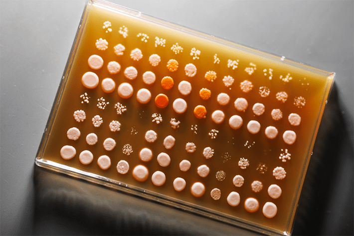

Cell biologist Amy Gladfelter recently set out to solve a riddle that concerns one of the most fundamental features of evolution: adaptation. After a decade of study, she had noticed that one of her favorite fungi, Ashbya gossypii, thrives in a wide variety of environments, from the tropics of Trinidad to the often frigid plains of Wisconsin. How, she began to wonder, did the simple filamentous fungus, with its tiny genome and simple lifecycle, evolve such versatility—and how did the beach-town strains differ from the cold-adapted ones?
Gladfelter decided to tinker with Ashbya gossypii’s genetic code to see what she could find out. In her laboratory at Duke University School of Medicine, she and her team sifted through 70 strains of the fungus and started methodically swapping proteins in its DNA. In particular, they focused on a protein called Whi3, famous for being a little unpredictable. Instead of locking into a specific position inside a cell or maintaining a single three-dimensional shape, like most proteins, Whi3 is messier and more chaotic: It migrates from one part of the cell to another depending on cellular conditions, and its amino acid sequences are unstable, tending to feature repeats and substitutions.
Gladfelter’s team took one fungi strain from Wisconsin that typically grows at a cool 50 degrees Fahrenheit, and another strain from Florida that is accustomed to sweltering 99-degree heat, and swapped small sections of their Whi3 proteins. The researchers discovered that these simple alterations were enough to make the cold-adapted fungus behave like its beach-loving sibling. Whereas the Wisconsin fungus would have typically stopped growing and died if it had been transplanted to Florida, cells that had bits of the Whi3 from the Florida-living strain grew and branched out instead, stretching filaments across petri dishes kept at a balmy 98.6 degrees Fahrenheit. Something about Whi3 had helped the organism learn to take the heat.
He realized it wasn’t an exception—it was a new rule.
“We saw, wow, that was sufficient to make the cold fungus behave essentially like it had come from a warm climate,” says Gladfelter.
The new hybrid was now more sensitive to the cold, too, picking up both the strengths and the weaknesses of its warmer counterpart. Something similar happened when they gave the Florida strains bits of the Whi3 protein from the Wisconsin fungus; The Florida strains became more Wisconsin-like—more cold-tolerant, and more heat-sensitive.
The findings add to a growing body of research that suggests that a class of funky proteins known as disordered proteins, found inside fungi and plants—but also in animals, including humans—play a key role in helping the Earth’s creatures adapt to their surroundings and acclimate to different environments.
Scientists believe that learning more about these proteins might help them better engineer heat-resistant plants that could tolerate climate change—and even to understand the very nature of adaptation itself.
“We know these proteins are common, we know they’re ubiquitous,” says Gladfelter, but scientists don’t yet know exactly how and why—and what these proteins are doing, on a molecular level, that’s so special. “There’s probably a lot of different ways these [disordered] proteins can change to make fungi more or less temperature sensitive, right? But we don’t know yet what those rules are, and really what the grammar is for that.”
She thinks the powers of disordered proteins they’ve found so far are just the start: “We'll see whether we’re right.”
Function generally follows form in the world of proteins. They are built of amino acid chains, which can crinkle and bend into a variety of origami-like shapes—some are like globs, others are like strings, for example. The chemistry-book dogma has always been that a protein’s purpose is determined by its structure: how it folds.
That is, until scientists first encountered disordered proteins and noticed that their amino acid sequences could shapeshift. In some of the disordered proteins, they found, all of the amino acids could switch places. In others, just one arm of the protein was fluid.
“This guy in my lab, he showed me this funny protein,” says Vladimir Uversky, now a protein expert at the University of Florida, who found his first disordered proteins while working in Russia in 1993. Initially, Uversky dismissed these proteins as one-off flukes or examples of nature gone awry. Maybe something was wrong in his experimental setup, and this was junk of the cell, Uversky thought. But then he realized it wasn’t an exception—it was a new rule.

FUNGI FEAST: Environmental isolates of fungi studied in the Gladfelter lab. Amy Gladfelter and her colleagues were interested in answering questions about temperature adaptation. Photo by Eamon Queeney.
“I got extremely excited about this idea,” Uversky recalls. At the turn of the century, he published his first paper describing a new category of proteins with intrinsically disordered sequences and no structure, which are extremely important for biology, nonetheless. We actually have two different protein universes, Uversky decided. “One universe of structure, another universe of disorder,” he says. “People were telling me that I was crazy.”
As computational models got better, though, it got easier for Uversky to identify more of these chaotic proteins and to gather evidence to support his case. The new findings suggest that half of all proteins made by living things are disordered—either fully or partially—and that disordered proteins are involved in crucial functions like DNA transcription, cell division, and immunity, among others. These messy molecules cropped up in studies on humans, plants, and fungi. Other research revealed that the more complex the organism, the more likely it is to have disordered proteins.
Uversky argues that disordered proteins were probably the first proteins to evolve, and the structured proteins we know today came later. He believes that disordered proteins play a central role in the adaptability of organisms, and speculates that this may have been especially so many thousands of years ago, when the environment was much harsher and hotter than today.
Uversky believes Gladfelter’s work on the different cold and hot strains of Ashbya gossypii supports these speculations, and the larger idea that, “Disorder is crucial for adaptability.”
Disorder certainly seems to be potent. In the Ashbya gossypii study, Gladfelter’s team swapped only 20 of the messy amino acids from the over 720 amino acids in the Whi3 protein—and that was enough for her fungus from Wisconsin to start acting like a fungus from Florida. Just a small segment of disordered protein can radically change the environment inside the cell, Gladfelter says.
She notes that, basically, the amino acid sequences in these whacky proteins are flexible enough that they can shift in response to the environment, allowing species that have them to adapt quickly. These shifts “may manifest during an organism’s lifetime,” she says, and if they are adaptive, “they get fixed in a population over multiple generations.”
We actually have two different protein universes.
Gladfelter’s findings are supported by research from another team of scientists, who recently analyzed the influence that disordered parts of a protein called ELF3 (an acronym for early flowering) have on the temperature sensitivities of thale cress plants. These sequences seem to act as temperature-sensing dimmer switches. In plants that have this disordered bit, ELF3 switches off when temperatures reach around 81 degrees Fahrenheit, enabling the thale cress to grow more quickly. When this disordered region is absent, the ELF3 does not switch off, and the plant continues growing slowly like a plant in a cool climate, even when temperatures rise.
Study author Philip Wigge, a professor of plant adaptation from the Leibniz Institute of Vegetable and Ornamental Crops in Germany, suggests thinking of the disordered proteins like sails on a boat. If it’s relatively calm, one wants the largest possible sail to catch what little wind is blowing. When it’s very windy, however, smaller sails are needed or the boat will catch too much wind and tip into the sea. In the same way, ELF3 proteins in plants from cooler climates have very large disordered segments to sense small amounts of heat, allowing for brief periods of supercharged growth, while plants from tropical climates have smaller disordered parts. They don’t need the extra boost in growth during warm periods since there is plenty of heat to go around. In a forthcoming paper, Wigge suggests disordered proteins serve the same function in mosses, too. “This is a very broadly conserved mechanism,” he says.
A study published last year compared three closely related types of yeasts and yielded similar results: Studies on rice and soybeans, too. Even studies on tardigrades, the super hardy micro-animals known for surviving the extreme conditions of outer space, suggest they are so great at avoiding death by desiccation and extreme temperatures due to an abundance of intrinsically disordered proteins.
Outside of the laboratory, these proteins might play a crucial role in allowing certain plants and fungi to persist in their native ecosystems as the Earth’s climate shifts. These same proteins could likely be used to adapt certain crops to climate change conditions via genetic engineering, says Wigge—introducing more disorder in plants that need more flexibility. While the work is still preliminary, says Wigge, “the race is now on.” 
Lead image: Irkhabar / Shutterstock
References
- Original Article: https://nautil.us/these-junk-proteins-may-fuel-adaptation-1227370/